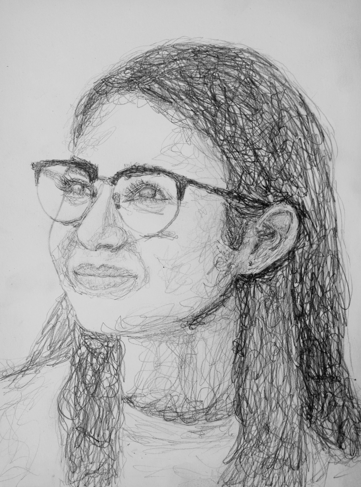

As a college student living on campus in an apartment, I have very little space in my bedroom to store the many items I possess. I have countless games, collectibles, clothes, art supplies, shoes, and other items crowding my space. When I have too many items in my space, I feel overwhelmed and have more trouble doing my work at my desk. Decluttering is scientifically proven to result in several mental health benefits, which include boosting mood and lowering anxiety, sharpening focus, and helping with productivity (Beckwith, 2022). All of these are imperative in my success as a student who prefers doing homework in the comfort of my own room. An intern at Utah State University suggests that you should “Start small,” targeting one area of the room at a time so organizing does not feel so overwhelming (Beckwith, 2022). I have taken a twist on this by instead sorting what I am getting rid of into categories that make sense to me. I am sharing my trash this week to force myself to declutter; if I select a sufficient amount of items to discard to make a webpage, I can clean out my space and make it more accessible for myself.
I have many items lying around that have never or no longer serve a purpose to me. Long or short, these items all have stories to them. I am sure an archaeologist would appreciate that I provide context behind each item that we discard, proving to myself that it had an impact on my life in some way. Archaeologist Sarah Newman at University of Chicago shares in an article that her team found things in Guatemala “that seemed to be ancient trash because they were burnt, broken and scattered, but they were also things that didn’t seem to be ancient trash because some of the materials were rare or valuable” (Lee, 2023). It appeared that one man’s trash was another man’s treasure. Perhaps sharing what is trash to me may reveal that this is true; maybe others will see value in the things I deem trash.
Contemporary artist Vik Muniz states that, “In a place like Gramacho, it’s impossible not to associate waste with desire.” He goes on to say, “Here, I met people who lived immersed in such broken dreams; people sorting through the trash, attempting to rescue the material value of objects; people separating and recycling that chaotic rubble, simplifying it back to its elemental past only for it to be transformed into another desirable thing” (Muniz, 2023). It is unfortunate that some things are meant to be thrown away, a prime example being packaging. I feel wasteful throwing so many things in the garbage. However, Muniz inspired me to find people who would get meaning out of my items, because I cannot keep cluttering my apartment. Blogging motivates me to identify items I can get rid of and take action instead of lazily leaving them to take up space. If I have a following relying on me to produce trash to share on my webpage, I am more likely to take initiative to find items I can clear out of my space.
References
Beckwith, Ashley et al. “The Mental Benefits of Decluttering.” Utah State University, 1 July 2022, https://extension.usu.edu/mentalhealth/articles/the-mental-benefits-of-decluttering.
Lee, Tori. “An archeologist talks trash.” The University of Chicago, 8 August 2023, https://news.uchicago.edu/story/archaeologist-talks-trash.
Muniz, Vik. “Reframing Trash Into Art.” The New York Times, 6 December 2023, https://www.nytimes.com/2023/12/06/special-series/vik-muniz-brazil-garbage-art.html .
My name is Gianna and I am a junior art major minoring in entrepreneurship. My art background includes pencil, ceramics, photography, and graphic design. I am currently taking a Web Authoring class where I am learning to code with HTML and CSS with hopes to add website design to my skill tree.
